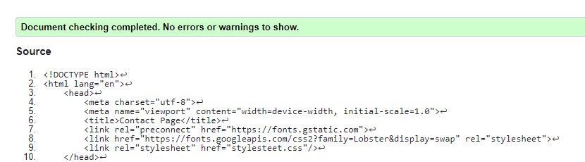
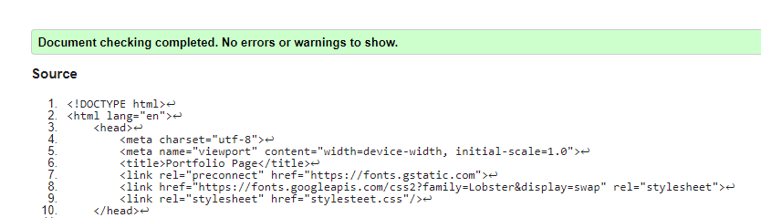
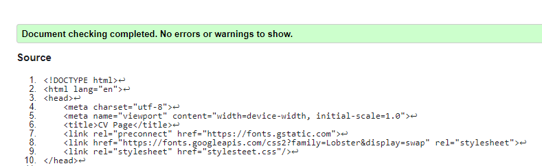
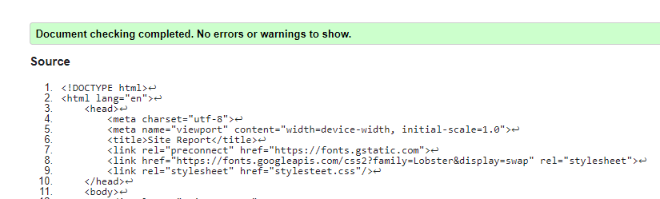
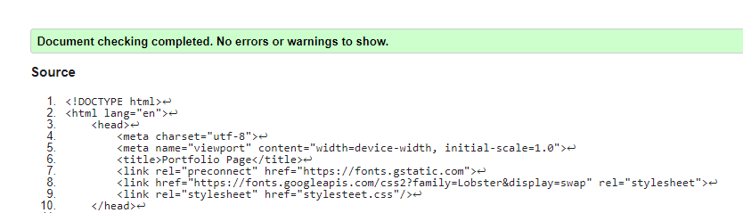
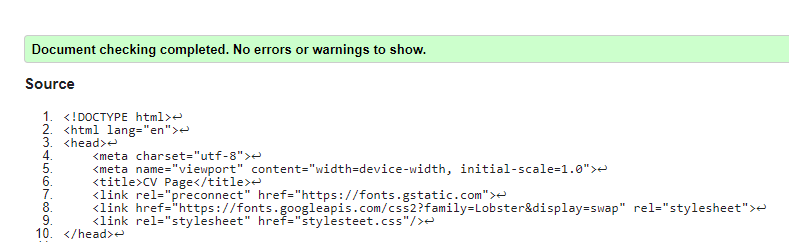
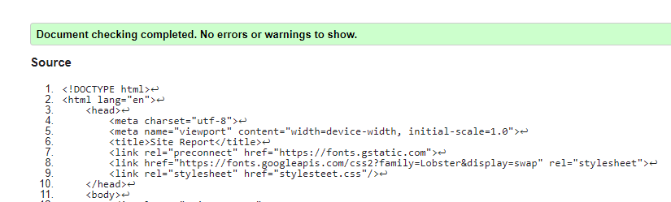
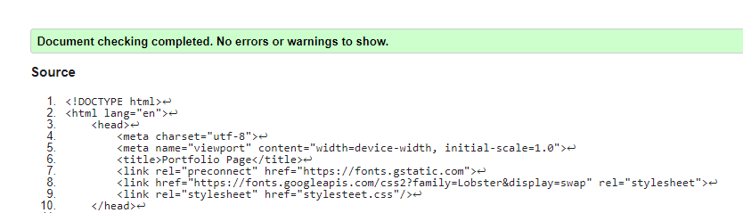
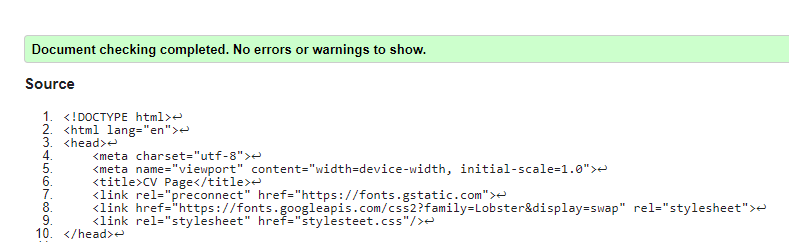
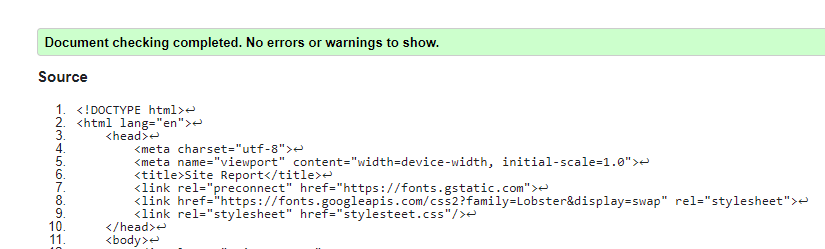

- Welcome to my first Webpage
- This is my first work in this area. I have never done something like that. More than that, I don’t have any coding background. This project tested my tenacity in order to finish this project. I’m very proud that I was able to create even such a basic webpage, but I’m sure that this project gave an impulse to continue to study and improve my skills.
- During the process I followed Tom’s indication and I get this result. Even thought, there are some topics where I failed. First of all, my hamburger menu is not adaptable for a mobile version, the icon just disappear when the size of the screen in changed.
- Secondly, I couldn’t manage to create a “:target” animation. As an initial idea, this tag had to hide the menu under the hamburger icon. The fact that I failed with first part, is the reason why I wasn’t able to achieve this aim.
- On the other hand, I’m very glad to see the final product, especially my submenu which contain a hoover effect. I tried so hard to make it workable and I done it. I never thought that it is so important to set the right sizes of the classes. As I observed, even a small difference of the percentage can change the whole design. Page layout is another subject which is seems to be an easy one, but at some point, I was struggling to organize page content into a well structured interface.
- As a matter fact, I understand now why it is so important to choose the right background and font. At the beginning I’ve chosen a very colorful image for background and a pretty font for a girl website. Spending hours on creating the page, I felt that my eyes are bored and the page became full. That’s why I decided, at one point to change all the design.
- Another surprising fact for me was code validator. The code which is seems to be ok from my point of view, can have many small issues. The common problem for me was unclosed tags, so, I need to pay more attention on details.
- Nevertheless, I am very excited about the result, even if I have small problems, I believe that it is a good start and motivation.

 







